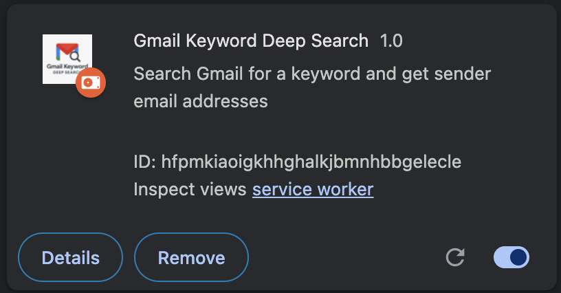
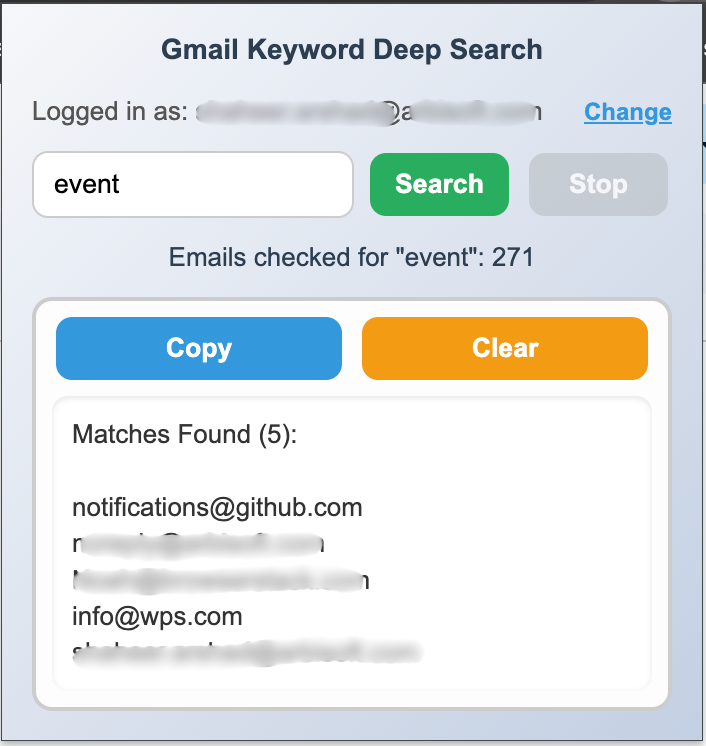

The Gmail Keyword Finder extension helps you search through your Gmail inbox to find emails containing specific keywords. It runs locally in your browser, never uploads data, and stores results only in Chrome local storage.
Here’s how the extension looks in action:
 We never store or share your Gmail data. Read our Privacy Policy.